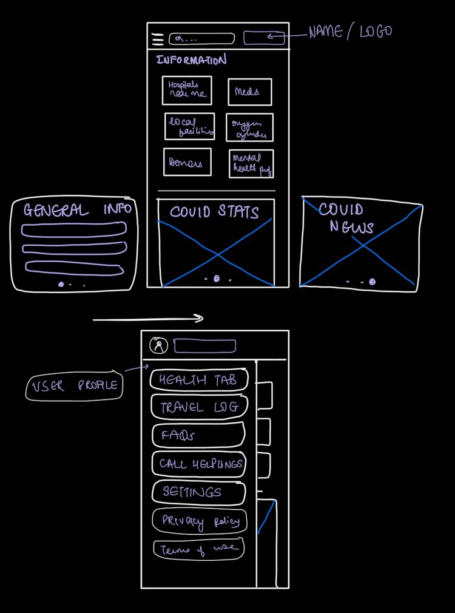

Covihelp
My role
UI and UX
Duration
2 Weeks
The team
Just me
The coronavirus crisis has brought India's
public health system to its downfall with hospitals running
out of beds and people desperately seeking medical help for their
loved ones.

Empathize
Evaluating the user's needs
- ICU's
- Availability of beds/ wards
- Reliable information
- Oxygen tanks
- Local needs
Empathize
A platform for the financially illiterate
To conduct user research, I conducted the 4 step process to combat the problem:
- Discover- Determine what is relevant for the users
- Explore- See how to address all user needs
- Test- Evaluate your designs
- Listen- Put issues in perspective, uncover any new problems and spot trends
User research
Creating a questionnaire
These are some of the questions I asked:
- When you needed the resources how do you wish things were? What are the things you were glad that they existed?
- What were the difficulties you faced?
- Were you asked for resources?
- Did you ask for information and were they reliable?
Creating User personas


Finding Opportunity in the Market
How to combat the issue?
My goal is to create a platform that acts as a middleman between the user and medical authorities. Using the HMW (How Might We) tool, I was able to get some clarity
- HMW connect local health care centers with NGOs and donors for funding or resources. (Basically help them enhance their capacity)
- HMW create a detailed mapping of beds (ward/HDU/ICU) for patients at various facilities.
- HMW create a database of all medical and paramedical staff who could contribute
- HMW allocate resources as per the spectrum of illness(mild, moderate, severe) and medical history.
Oxygen access has been a long-neglected element of health system planning, despite being an essential treatment for various diseases. In many countries, health facilities are not equipped to meet the rising demand for oxygen tanks. Almost half of all hospitals in such areas have an inconsistent supply even a lack of medical oxygen.
Sketches
